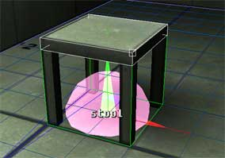
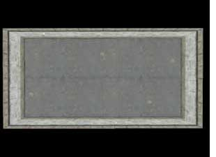
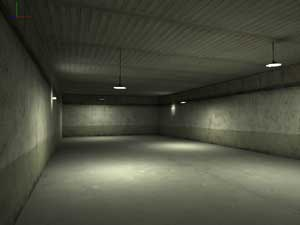
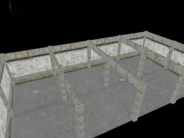
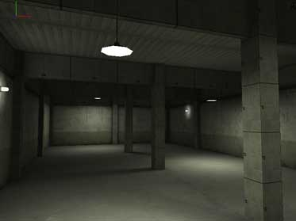
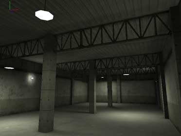
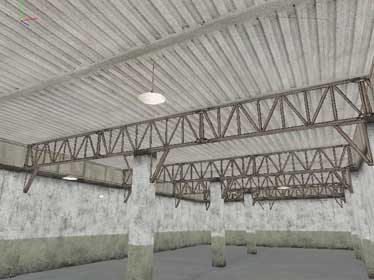
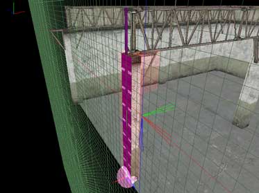
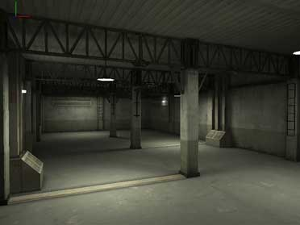
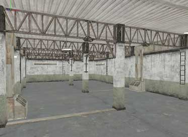

|
Prefabs
In this tutorial we will get ourselves acquainted with
the concept of 'prefabs' -- how to make and use them and what are the
benefits. If you are familiar with MaxED1, you already might know
something about prefabs, but the way MaxED2 has them integrated takes
this concept to a whole new level and it is very useful to know
something about prefab usage.
What are prefabs?
The term prefab stands for "pre-fabricated
object".
The basic notion of a pre-fabricated object simply means an object (like a table, a car, or a fancy spiral
stair case) that somebody created and stored separately so that others could use it in their own projects. Nowadays there are many
game engines and level editors with different understandings of what the term "prefab" actually entails. Things like resource sharing (all identical prefabs in a level together only occupy the disk and memory space of one) and manageability (modifying one prefab in a level modifies all of that type) have come into play. Also the term itself has started to vary from engine to engine; what in MaxED2 is called a prefab,
for example in UnrealED is called a "mesh".
However, as far as MaxED2 is concerned, what you need to know is this:
-
In MaxED, a prefab is a level object that most often contains visible geometry.
It might contain also dynamic content and scripting, but not
necessarily. Almost anything can be turned into a prefab: example be a
pillar, a roof truss, an exploding barrel, or a section of brick wall with barb wire on
top -- you name it.
-
A prefab resides in its own independent disk file (these have a .pre -suffix) and can be loaded and inserted into any level.
-
In their normal state in MaxED, prefabs are locked for editing. This means that their contents cannot be altered.
They can be rotated and moved around in the level, but that's it. If you want to edit them, you have to
open them first.
-
When you open a prefab in MaxED, make your changes, and close the prefab to save your changes, two things will happen. First, the new, edited prefab will be
saved on top of the original file from which the prefab was loaded, thus OVERWRITING it. If you make a mistake, like delete half the content of the prefab and save it,
Ctrl-Z (undo) is your friend. Second, all the prefabs in the level that are the same type as the one you edited, will automatically be
updated, or in MaxED terms, refreshed.
-
A prefab file includes all the textures used by the prefab. Upon inserting a prefab into a level, you might see in the status log window lines saying that textures have also been added to the level; of course, these lines will not appear if the textures used by the prefab are already present in the level.
So why then, prefabs?
Prefabs save a lot of time and effort, and also ensure that your objects are consistent throughout the level. For example, let's say you have a storage room with dozens of small identical boxes and you realize you have to make all of them hollow/dirtier/more detailed/whatever. When these boxes are prefabs that point to the same original disk file, you only need to change one of them, and the rest are updated automatically. You won't need to go through everyone of them manually. It's a lot easier and a lot faster. Also, if the boxes have physics (i.e. react when shot or pushed), you can be sure that everyone of those boxes will react and behave in the same way.
With prefabs it is also possible to build by "sketching". What this means is that, if for example you have a room that you intend to fill with tables and chairs, but you are not sure what kind of tables and chairs, you can start by just making boxes of approximately right size. Make those into prefabs and save them with correct final names, not temporary ones. Now with these boxes representing your upcoming final versions, you can just place them around and see how they feel, if they should be bigger, smaller, fewer or more numerous. When you are happy with the placement and size you can start making small improvements by giving one chair a crude shape, and you'll instantly see how they all look with that shape.
The basic and most important rule about prefabs is that anything which
repeats or could be useful in more than one level, should be made into a prefab. It may feel like unnecessary extra effort at the time, to start categorizing, naming, and saving the object that you are working on, but it is most definitely worth it.
About the prefab parent

The "prefab parent" is the central point of the prefab around which the prefab grows and lives as you edit it. It can be thought of as the root of the prefab. The prefab parent dictates the prefab's placement and orientation in the level, and even as you may edit the contents of the prefab, change its extrusions, proportions, add stuff to it and whatnot, the prefab parent does not change. It will stay where it's put and keep it's orientation, until you grab the entire prefab and move or turn it.
So, the important concept about prefab parents is that if you rotate or move a closed prefab around in a level, you are not changing the contents of the prefab itself, you are only changing the orientation or location of that one instance of the prefab in the level. However, if you open the prefab, select only the prefab parent, turn it around 90 degrees clockwise and close the prefab, you are now doing something that affects all the prefabs of that type in the level; If there are more prefabs of that type in the level, they will now all turn 90 degrees counter-clockwise.
The prefab parent also functions as the pivot point for the prefab, so if you rotate a prefab when you have the pivot mode on (as opposed to having the vertex mode on), the prefab will rotate around the prefab parent (unless you are having the prefab selected but are pointing at another object while rotating - in
which case that object's pivot will be used)
When making a prefab, the placement of the prefab parent in relation to the rest of the prefab, is not trivial. For example, in a pillar prefab, a good place for the parent is in the floor level in the middle of the prefab. This way, their placement becomes very precise; just align the grid to the floor, copy the pillar to the clipboard and in F3-mode point at the right grid points and paste the prefabs into place. You can also turn them around in F5-mode (pivot mode on) and always be sure they are centered correctly.
Limitations of prefabs
Editing
When prefabs are locked, you can not make any changes to them. The locked
nature of a closed prefab is presented with showing the prefab parent
and the bounding box in F5 mode (object). Also, in F4 (polygon)
or F6 (texture) mode, all faces that are a part of a locked
prefab are presented with blue/white color indicating their locked state. Most
interaction is prevented, but you can use some commands with
prefab faces, like F6/G (grab) to take a texture in use and A
and Shift-A in various modes to align the grid to polygons.
Mirroring
Especially when creating room geometry, mirroring prefabs could be very
useful. From a technical point of view, mirroring is a pretty
"violent" action which needs to affect very deeply the
matrixes and polygons of the 3D object. To keep the prefab idea clean
(all prefabs are the same) and to avoid the possible degradation of the geometry,
it was necessary to prevent closed prefabs from being mirrored.
If you mirror some geometry which contains (closed) prefabs,
their pivot points (prefab parent nodes) are placed to the correct
location, but the geometry keeps it's orientation. Luckily it is
relatively fast and quick to rotate the objects using for instance F5/4,
which rotates objects in 90 degree steps and have those prefabs work
nicely. If the prefabs are not symmetrical (rotation can not be
substituted for mirroring), this will not work. Choice then is to
consider making the prefabs with different division (bigger or smaller
parts) or possible with two different prefabs (like truss_left and
truss_right) to avoid this problem. When prefab is open, you can
use mirror on any part of the geometry (as usual), so mirroring
limitation only affects closed prefabs.
Nesting
You cannot put prefabs inside prefabs. Even if this could sometimes be
very useful, to keep things simple, nesting prefabs was decided to leave
out from MaxED2.
The process of making a prefab
1. Making the actual stuff that comprises the prefab, like for example a bookshelf
2. Placing the prefab parent
-
Align the grid so that one grid intersection is where you want the prefab parent.
Tips: It is useful to consider this as the "point of
origin" of the prefab. For example, if you need to add geometry
later or you need to rotate the closed prefab (instances),
place the parent where you would put it's natural zero or the pivot
point. Notice also that the prefabs will autogroup to rooms in which
the parent is, so it is better to choose a place which would be
inside or just on the edge the room (if the prefab will be next to
wall).
-
Go to F3-mode, point at the grid point and press N
(for "new")
-
Select "prefab parent"
-
Select a suitable size for the parent, a good size is such that a small portion of the parent is always visible.
-
You can name the parent now if you want, but you can do that just as well when you save the
prefab
3. Grouping the object/objects to the prefab parent
-
In F5-mode, select all the objects you want the prefab to include (note: this selection cannot include other prefabs)
-
Press 'g' (for "grouping"), and left-click the prefab parent
4. Saving the prefab
-
Click the prefab parent with the middle mouse button
-
From the list select prefab->Save as
-
Select a location and a name
More about grouping and hierarchy
One notable issue about prefab parents is their special behavior
what comes to grouping and their appearance in hierarchy.
Open any prefab for editing and find it from hierarchy
(shift-click any object in the scene view and the hierarchy will jump to
it). Study the hierarchy by pressing the plus sign in front of the
prefab parent node and you will see a folder attached to the parent
node. This folder is the container of all the parts of the prefab.
Anything outside the folder, and it is not part of the prefab.
However, it is possible to have items under the prefab
parent, but not inside the folder (on the same level of the hierarchy
than the folder is, not inside it). These objects are grouped to the
prefab parent node, but are not part of the prefab.
By default, when you group something to a prefab parent
that is open, the items go inside the folder (become part of the
prefab). If the prefab is closed and you group something into it, they
will be grouped to the prefab parent just like any other objects
can be grouped to another. There is nothing preventing you from grouping
prefabs to objects or even prefabs to another prefabs, just as long as
you do not attempt to put a prefab inside another (prefab's
folder).
Explanation of the prefab options in middle mouse button-menus
F3:
Place prefab
Pops up a list of all the prefabs currently in the level, asking you to choose which prefab should be placed here. The prefab will be placed so that it's prefab parent is exactly in the selected grid point. Orientation will not vary. By clicking the "Add"-button, you can bring new prefabs to the map.
Place prefab aligned
The same as above, but with an extremely useful twist; the orientation will be in relation to the grid, so if the grid is tilted, so will be the prefab. Very useful for placing prefabs onto
non-orthogonal surfaces.
F5:
Refresh this
Refreshes the selected prefab with the latest version saved to disk.
Refresh this type
Same as above but refreshes all the prefabs of the selected prefabs type.
Refresh all
Refreshes all the prefabs of all types with the latest version saved to disk.
Change this
pops up a list of all the prefabs currently in the level, asks you to choose what prefab the selected prefab should be replaced with
Change this type
Same as above, but replaces all the prefabs of the selected prefabs type
pops up a list of all the prefabs currently in the level, asks you to choose what prefab all the prefabs of the same type as the selected one should be replaced with.
Edit master
Refreshes the prefab from disk and opens it for editing.
Edit this
Same as above but does not refresh the prefab from disk first.
Save and refresh
Closes the prefab, saves it to disk, and refreshes all prefabs of that type in the level.
Save as
Closes the prefab and prompts for a new name and location to save in.
Select all this type
Selects all the prefabs of the selected prefabs type
Remove prefab
Removes the prefab parent and makes the prefab into "ordinary
geometry".
Prefabs in action
Let us imagine a typical scenario where geometry prefabs
are used to design a room. If you want to get a closer look, you can
follow the iterations from the Prefabs_examples.zip
(7.5 MB)
We start out with a small room which is 12 m wide, 24 long, and
5 m high with some simple texturing and also some lights in place. The lights will remain untouched throughout this exercise, they are there merely to provide something constant against which to see the changes being made.
Notice also a very small room (only 12.5 cm diameter) in one corner of
big room, this is because in MaxED you must have
at least one exit in order to constitute a valid level.
 
To make the room interesting and more like a typical and
realistic industrial location, we need more than just an empty room.
Industrial spaces have often a clear, generic structure and we need some pillars and beams
to bring this effect. At this point, we are not quite sure how they
should look, but a realistic approach would be to place pillars every 6 meters to all directions and beams crossing the 12-meter-width of the room intersecting with the pillars.
The first version of the pillar will be a 50 cm x 50 cm x
5 m tall box, spanning from floor to ceiling. We make one
"placeholder" pillar with just generic texture to these
dimensions. Then, we add a prefab parent to the middle of the bottom of
the pillar. We group the pillar mesh to the parent, select the parent
and choose Save as from the prefab submenu to create a real prefab.
A descriptive name is always useful. Let's take this
pillar to the corner of the room so that the parent is exactly at the
corner. Now, let's copy/paste this prefab and a new copy appears. Changing
the grid to 2 meters helps when we move the copy 6 meters towards the
center line of the room (use cursors in moving, do the math how many
presses you need :-). Then, another copy/paste and moving the new copy
to the corner. Now we have one row (three) pillars along the shorter wall.
Multi-select all these three, and start copying, pasting
and moving the set until you have populated the room with copies
standing exactly 6 meters apart (15 pillars altogether). Since we
have some copies exactly at the corners and sides of the room, many of them will be left
partially "hanging" outside the room. We will not care about this for now.
Next are the beams. As the walls are textured with 4 meters from the ground up made of painted concrete, and the last meter of sheet metal,
let's make the beams fit this setting. A preliminary box prefab, representing the beams
could be 12 meters long, 1 meter high and 12.5 cm wide. You should be
able create the mesh, make it into a prefab and handle the copying
yourself.

Since it's quite fast with a small map like this, the lights
can be calculated after every iteration to see how they behave
(following lighting values are good for prototyping: average lightmap border off, viewport size 512, global lightmap res 100%, MaxEnergyPerShoot 5, StopAtEnergy 1, ignore portals on
(Ignore the small 12.5 cm room). Here's the situation after adding these preliminary versions of the pillar- and
beam-prefabs.

The proportions look to be good enough, but the beams are so high that they block out a lot of the light. For a solution,
let's open the beam prefab (select prefab and press R, "Edit
Master"). The prefab loses it's lighting because it is first read
from the disk and that version has no lighting or lighting that is not
calculated for this spot). Let's texture it with a metal frame texture that has an alpha map, so it's partly see-through.
When ready, select prefab parent and press Ctrl-R "Save and
Refresh" to close the prefab again and make all similar prefabs in
the level to turn into this look.
Alternatively we could press Shift-R "Edit
This" when opening the prefab. The system would open the prefab
right there and not load it from the disk. If you are absolutely sure
that this version you see in front of you is what you want to edit, go
right ahead and use Shift-R (this preserves the lightmaps too, at least
until you save and refresh, when other similar prefabs inherit the
lightmaps from this one). However, it might be better to teach yourself
to use Edit Master (R) always, as this prevents you from losing any
changes that you might have made to the prefab elsewhere. Remember, It
is not uncommon to share some prefabs between levels.

After another lighting calculation, we notice that the beams themselves aren't very well lit because of the downward
lighting --at least you see more light now. The pillars might work
better if we cut them in four meters so they look like they are supporting the beams as opposed to the beams just going through them. In addition,
better texturing them with the wall texture and added small supports to the sides.
We open one pillar prefab, make the changes, group the new meshes to the
prefab parent and press Ctrl-R. All prefab pillars are updated and the
looks improve again.

Ok, this is probably enough to illustrate the idea; you make one prefab that is used in many places, and start tuning it. You get to see them all updated for the trouble of editing just one. Very fast, very efficient.
Now about those pillars going outside the room geometry. This matters little if there are no other rooms around this one. Of course, even then, they would still consume
little unnecessary resources as they will never be seen since they are out of the level. However, if there are rooms next to this one, it could get more serious. Those protruding supports of the pillars could easily become visible from the other side of the
wall -- Not good.
So, I will make a few variations of the pillar prefab. Namely a quarter pillar (for corners) and
two half-pillars (for walls, two just for
variety). When we made the pillar-prefab, we made sure that the prefab parent is just in the middle of the pillar so that I would be able to rotate the pillar easily around it's pivot point (the parent) still keeping it centered. Now it will pay off.
Open one of the pillar-prefabs next to the wall (not in the corner), align the grid to the wall, select the pillar
mesh and press Y to split the object. Now delete the excess half
and be sure that the wall pillar will not go a millimeter outside the level.
Delete the other one of the support pieces, and check that the remaining half of the pillar is still grouped to the prefab parent (when you split an object, it's a good idea to check that the right part remains grouped to whatever it's supposed to).

This is what the result looks like. The purple material is dummy-material. Polygons textured with that are not processed at all run-time. Now I save the prefab under a new name by adding a "-half" to the old
name (Select the prefab parent and select Save As from the menu,
do not use Ctrl-R unless you want all the pillars in room to turn
into this half-version).
Now, select all the rest of the "full pillars"
which overlap the walls (but not the ones in the corners). Select F5/Prefab/Change
this and you will get a list of all the prefabs in the scene. Pick
the new (with -half suffix) from the list and press OK. All the
pillars next to wall will turn into the half version. The only problem
is that not all the prefab parents are aligned correctly and the mass of
these -half-versions is not inside the room. This is an easy fix: align
the grid to the floor and make sure that you have pivot rotation on
(Press A to toggle between PVT and VTX modes in F5 mode). Go trough the
half pillars one by one, selecting them and tapping number 4 (rotate 90
degrees around Y axis) until you have all the -half versions the way you
want them.
Making a new another version for walls and yet another
"quarter" version for corners with -corner suffix should be
easy task now. After all that and yet another lighting calculation
everything should look pretty OK.
This should give you a good overview of working with
geometry prefabs.


Here you see the level with some more extra to the mix. In this final iteration, the beams have some extra geometry in their middle joints, the pillars have iron fixtures on them, skirt edges and small bevels in the corners.
A simple ventilation box to the other variant of the wall pillar gives
also a nice touch.
In this article we have only studied prefabs as static
objects. Making prefabs with dynamic content is even more powerful
thing, as you do not have to worry scripting bugs nearly as much as it
was needed with Max Payne 1. Scripting prefabs with dynamic content is
covered in the Dynamic Content Article. We
also recommend you to study any (dynamic) prefabs that Remedy has
provided in the levels and as downloadables to learn more how to make
prefabs with or without dynamic content.
|